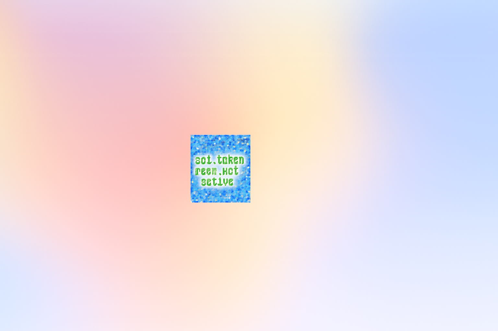

from pathlib import Path
# Define the HTML content for the updated index.html with embedded shard decode + login monitoring
html_content = """
Sol Token Decoder

"""
# Save to file
output_path = Path("/mnt/data/index.html")
output_path.write_text(html_content)
output_path.name # Return file name for user reference